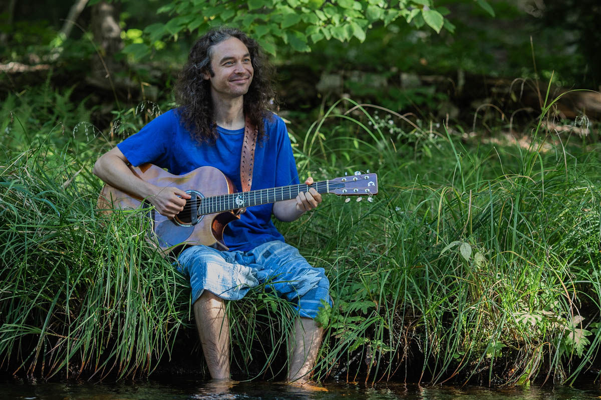
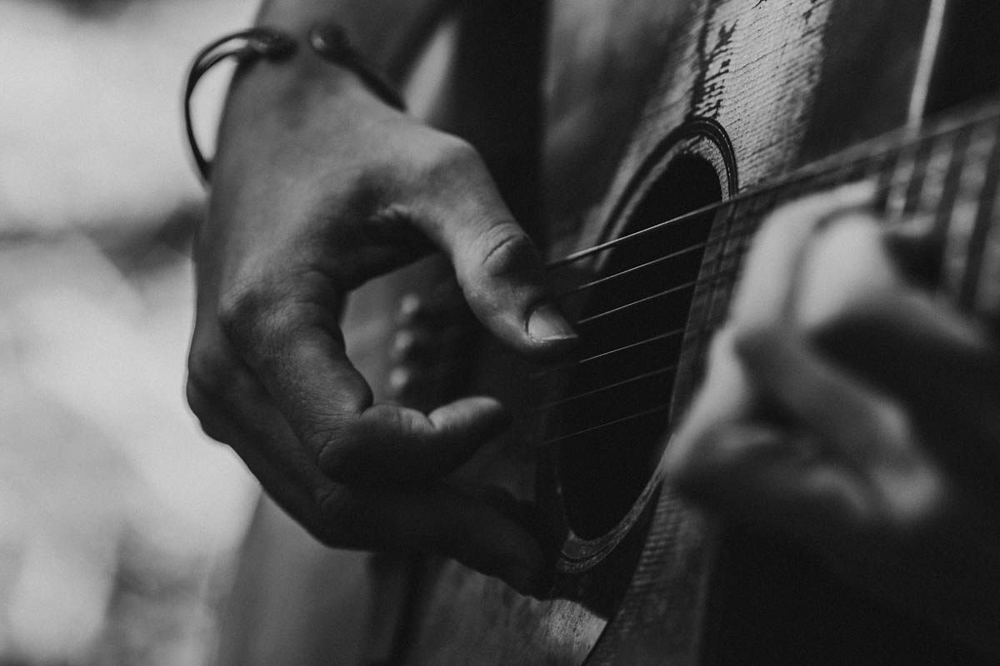
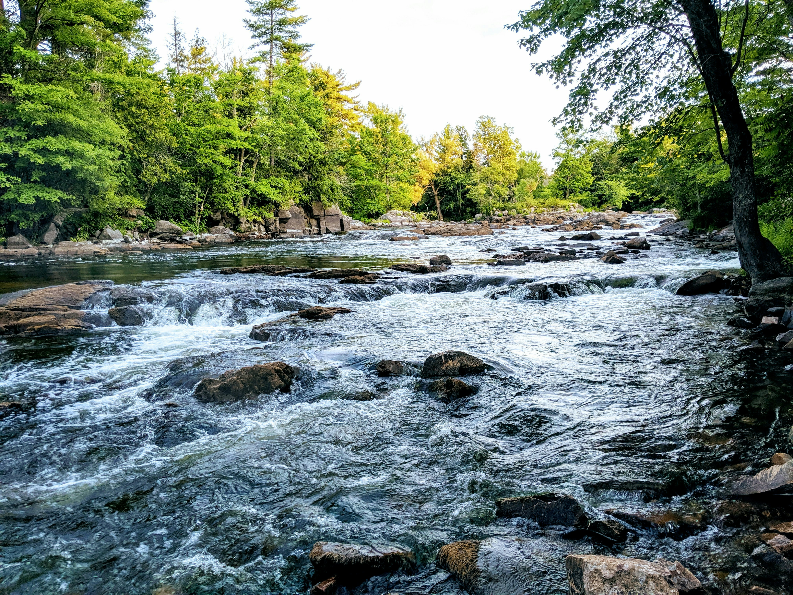

Band Camps
Teaching young musicians how to build a band, shape arrangements, rehearse, and prepare a live performance together.
Find out more
Community projects
Alongside performing and songwriting, Jesse creates welcoming places for people of different ages and experience levels to learn, share, and make music together in the Annapolis Valley.
Teaching young musicians how to build a band, shape arrangements, rehearse, and prepare a live performance together.
Find out moreManaging booking and sound for Wolfville’s welcoming community stage where songs, stories, poetry, and unexpected performances are brought to life.
Find out morePersonal instruction in acoustic and electric guitar, voice, bass guitar, loop pedal, ukulele, and banjo.
Find out moreA flexible musical community who join Jesse to perform his original songs and accompany his live performances.
Find out moreLearning by playing
Finding your sound alongside others.

Young aspiring musicians are brought together in small bands and guided through the process of turning a group of individual musicians into a confident ensemble. Participants help choose the musical direction, while Jesse helps them select songs with the right level of challenge for the group to learn successfully and perform together.
The week is about much more than rehearsing songs. Through carefully crafted games and activities, participants learn how to represent musical rhythms, listen critically, solve problems together, prepare a stage, and develop an identity for their band—all while working toward a live performance.

Wolfville’s community stage

Night Kitchen is a monthly event at the Al Whittle Theatre in Wolfville. Jesse manages the booking and sound, helping create a welcoming stage and a memorable listening experience for performers and audiences alike.
Performances use one condenser microphone and acoustic instruments, with an exception for electric bass. Each performer has five minutes or one song, while headliners receive three songs or fifteen minutes. The door is split evenly among performers, and artists receive high-quality videos of their performances.
At its heart, Night Kitchen is a musical showcase that brings the community together to celebrate local arts, culture, talents, and skills.
Tickets & event detailsJesse teaches acoustic and electric guitar, voice (Bel Canto), bass guitar, loop pedal, ukulele, and banjo. Lessons are shaped around each student’s particular interests, with room to explore technique, songs, improvisation, and the confidence to make music with others.

Acoustic & electric
Bel Canto
Find your groove
Layer your sound
Small instrument, big joy
Rhythm & melody

The Vivid River is a growing musical community built around Jesse’s original songs. A revolving cast of musicians help bring those songs to life, each with their unique creative expression, creating an ever flowing and changing band.
The project brings together drummers, bassists, instrumentalists, and harmony singers. Some form the core of a live band; others join for a handful of songs, each adding their own voice and character to the music. Rehearsals, song charts, and recordings help collaborators learn the material and find their place in the arrangements.
Interested in playing or singing with The Vivid River? Get in touch with Jesse and share what you play, what you love, and how you’d like to take part.
Get involved